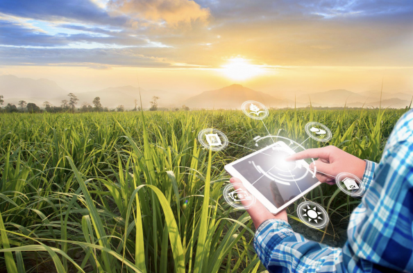
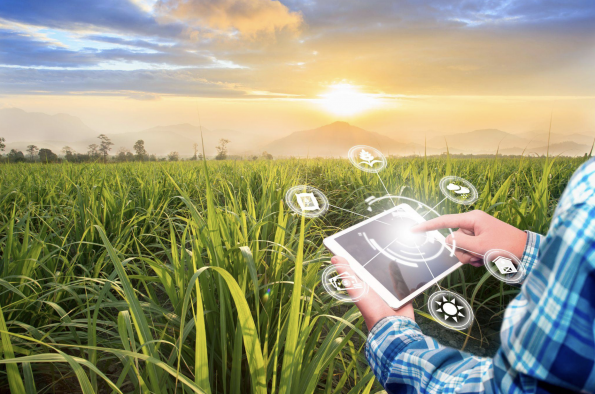
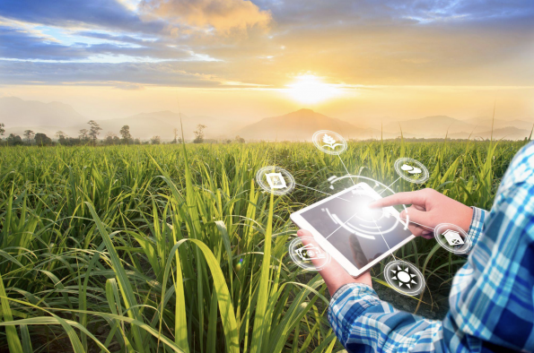
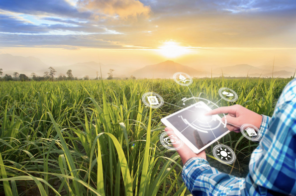

Remote sensors collect data by detecting the energy that is reflected from Earth. These sensors can be on satellites or mounted on aircraft.
Remote sensors can be either passive or active. Passive sensors respond to external stimuli. They record natural energy that is reflected or emitted from the Earth's surface.
The most common source of radiation detected by passive sensors is reflected sunlight.
In contrast, active sensors use internal stimuli to collect data about Earth.
For example, a laser-beam remote sensing system projects a laser onto the surface of Earth and measures the time that it takes for the laser to reflect back to its sensor.
Remote sensing has a wide range of applications in many different fields.
One interesting path is a vision creating a three-dimensional picture of the region surrounding the magnetic north pole using satellite imagery. In order to integrate the photos, you first develop a mathematical model. Then, as the ice melts, moves, and alters, we add new pictures of it to the map. The map has been used by search and rescue crews since it indicates areas where the ice has created ridges and become inaccessible. Experts on climate change also use your map to monitor variations in the polar ice. The thickest ice is indicated by the places on your maps that are the brightest. Your maps' darkest regions indicate the spots where extremely thin, mushy ice has absorbed light. Your work is like a giant, ever-evolving puzzle every day.
Remote sensing specialists support scientists by designing and conducting remote sensing data gathering efforts. For example, they determine the best techniques, equipment, spectral band, and time of day for a particular mission. They may prepare flight plans, configure sensors, apply the techniques to collect data in the field, and process the resulting data. This data is used in a wide variety of fields, including all of the environmental sciences, agriculture, archaeology, urban planning, water management, meteorology, and even engineering and business. However, before it can be used, remote sensing specialists must verify the integrity and accuracy of data and correct any errors due to atmospheric variation or other interference. They may also build photo mosaics of large areas, participate in the planning or development of mapping projects, and integrate remotely sensed data with other geospatial data to create maps. Many use computer programming languages like Python to automate data processing tasks. They may also create metadata that documents the datasets so that others will understand their context and characteristics.
In order to assist scientists in monitoring the Earth and human impact on it, remote sensing technologists create maps utilizing satellite and infrared imagery. Most of your work is done inside, both individually and in teams. A large number of remote sensing experts reside in their hometowns. The fact that you can study the Earth's surface without ever having to leave your office intrigues you. Many scientists use the information you create to increase their understanding of environmental phenomena. It makes you feel good to know that how you interpret pictures can help people comprehend contemporary environmental challenges.